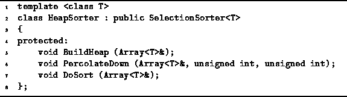
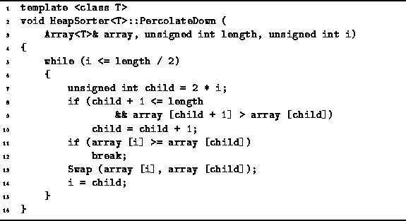

Data Structures and Algorithms
with Object-Oriented Design Patterns in C++
Data Structures and Algorithms
with Object-Oriented Design Patterns in C++
Program  defines the class template HeapSorter<T>.
The HeapSorter<T> class is derived from the abstract
Sorter<T> base class.
Three protected member functions are defined--BuildHeap, PercolateDown and DoSort.
The DoSort routine comprises the body of the sorting algorithm.
The BuildHeap and PercolateDown routines
are used by DoSort to build the heap and then to sort the array.
defines the class template HeapSorter<T>.
The HeapSorter<T> class is derived from the abstract
Sorter<T> base class.
Three protected member functions are defined--BuildHeap, PercolateDown and DoSort.
The DoSort routine comprises the body of the sorting algorithm.
The BuildHeap and PercolateDown routines
are used by DoSort to build the heap and then to sort the array.

Program: HeapSorter<T> Class Definition
In the first phase of heapsort,
the unsorted array is transformed into a max heap.
Throughout the process we view the array as a complete binary tree.
Since the data in the array is initially unsorted,
the tree is not initially heap-ordered.
We make the tree into a max heap from the bottom up.
I.e., we start with the leaves and work towards the root.
Figure illustrates this process.

Figure: Combining Heaps by Percolating Values
Figure (a) shows a complete tree that is not yet heap ordered--the root is smaller than both its children.
However, the two subtrees of the root are heap ordered.
Given that both of the subtrees of the root are already heap ordered,
we can heapify the tree by percolating
the value in the root down the tree.
To percolate a value down the tree,
we swap it with its largest child.
E.g., in Figure (b) we swap 3 and 7.
Swapping with the largest child ensures that after the swap,
the new root is greater than or equal to both its children.
Notice that after the swap the heap-order is satisfied at the root,
but not in the left subtree of the root.
We continue percolating the 3 down by swapping it with 6
as shown in Figure (c).
In general, we percolate a value down either until it arrives in
a position in which the heap order is satisfied
or until it arrives in a leaf.
As shown in Figure (d),
the tree obtained when the percolation is finished is a max heap
The PercolateDown routine shown in Program
implements the algorithm described above.
The PercolateDown routine takes three arguments:
a reference to the array;
the number of elements in the array to be considered, n;
and the position, i, of the node to be percolated.

Program: HeapSorter<T> Class PercolateDown Member Function Definition
The purpose of the PercolateDown routine is to transform the subtree rooted at position i into a max heap. It is assumed that the left and right subtrees of the node at position i are already max heaps. Recall that the children of node i are found at positions 2i and 2i+1. PercolateDown percolates the value in position i down the tree by swapping elements until the value arrives in a leaf node or until both children of i contain smaller value.
A constant amount of work is done in each iteration. Therefore, the running time of the PercolateDown routine is determined by the number of iterations of its main loop (lines 5-15). In fact, the number of iterations required in the worst case is equal to the height in the tree of node i.
Since the root of the tree has the greatest height,
the worst-case occurs for i=1.
In Chapter it is shown that the height of a complete binary tree
is  .
Therefore the worst-case running time
of the PercolateDown routine is
.
Therefore the worst-case running time
of the PercolateDown routine is  .
.
Recall that BuildHeap calls PercolateDown
for  .
If we assume that the worst-case occurs every time,
the running time of BuildHeap is
.
If we assume that the worst-case occurs every time,
the running time of BuildHeap is  .
.
 Copyright © 1997 by Bruno R. Preiss, P.Eng. All rights reserved.
Copyright © 1997 by Bruno R. Preiss, P.Eng. All rights reserved.